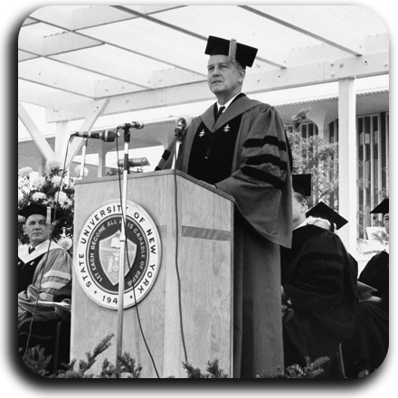
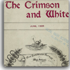
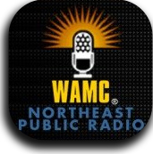
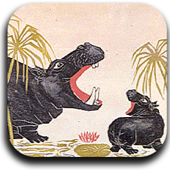
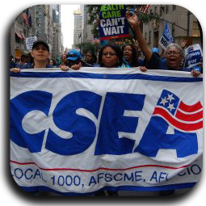
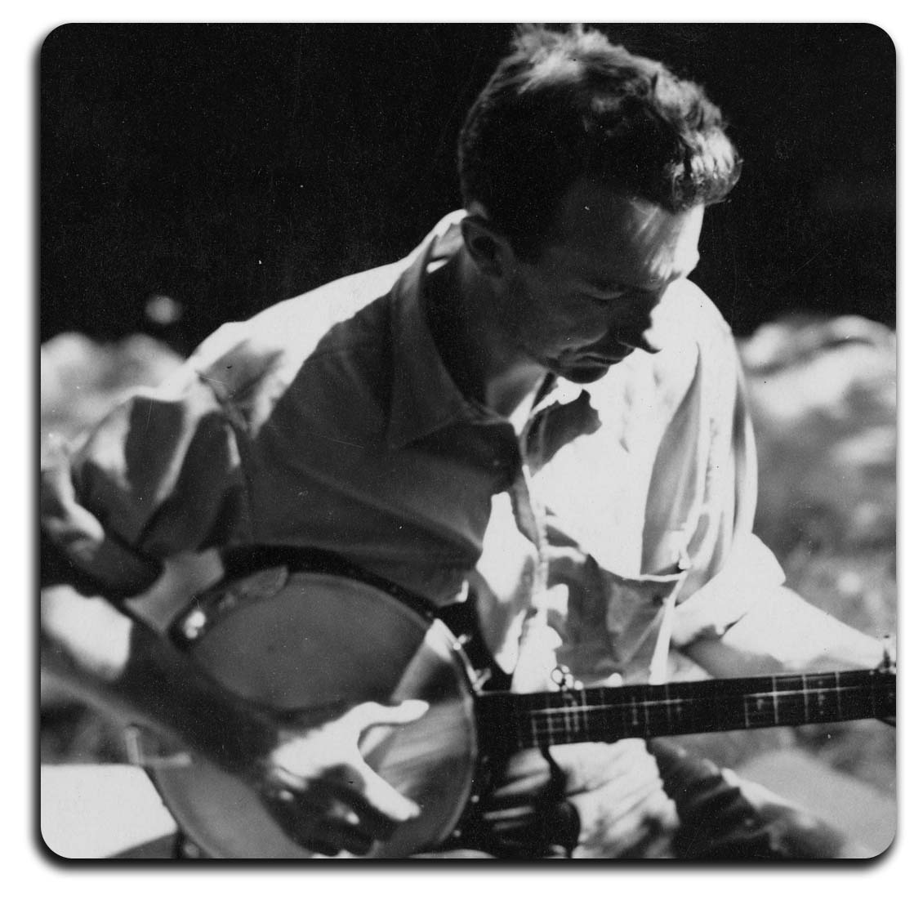

|
The University at Albany Archives’ Digital Collection consists of digital images, audio and video that document the faculty, students, administration, buildings, and campus life. |
The United University Professions includes images the history of the labor union. |
|
Browse the Crimson and White, Junior News, Senior News, and yearbooks. |
The WAMC program archive includes The Capitol Connection; The Health Show; The Legislative Gazette; and more. |
|
The Marcia Brown Digital Collection includes speeches and images documenting her career as an internationally renowned illustrator and author of children's books. |
The Civil Service Employees Association (CSEA). The Civil Service Employees Association (CSEA) includes over one hundred video oral history interviews and thousands of historic photographs |
|
The Norman Studer Digital Collection contains audio recordings, photos, and live recordings of Pete Seeger. |
|
The State Employee and the Civil Service Leader issues from 1932-1949, 1946-1947 and 1950-1953 are available online |
Albany Student Newspaper Collection Browse the Student News and the Albany Student Press online. |